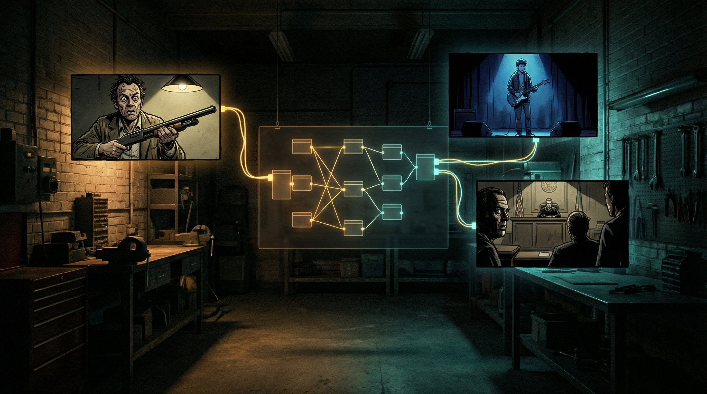
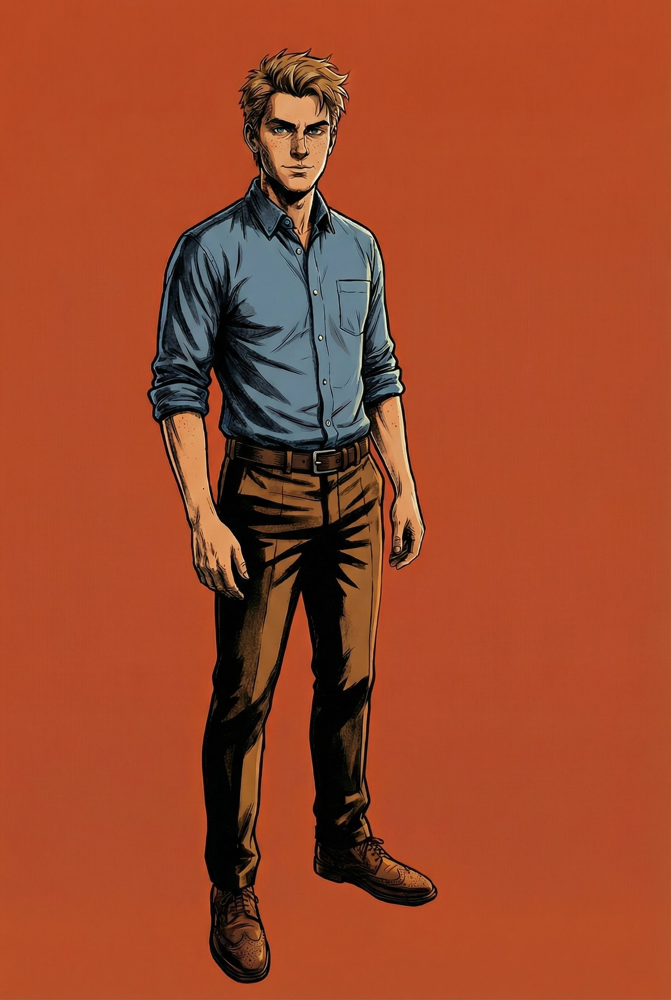
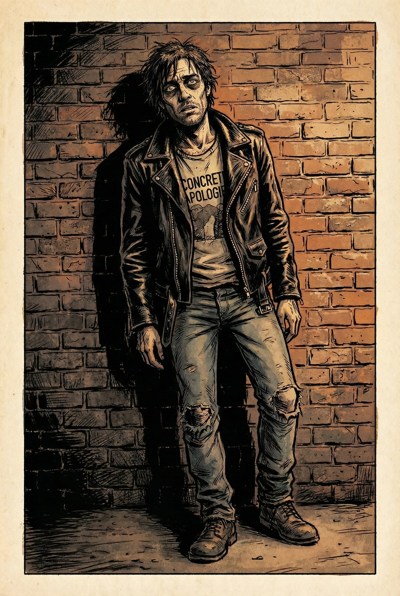
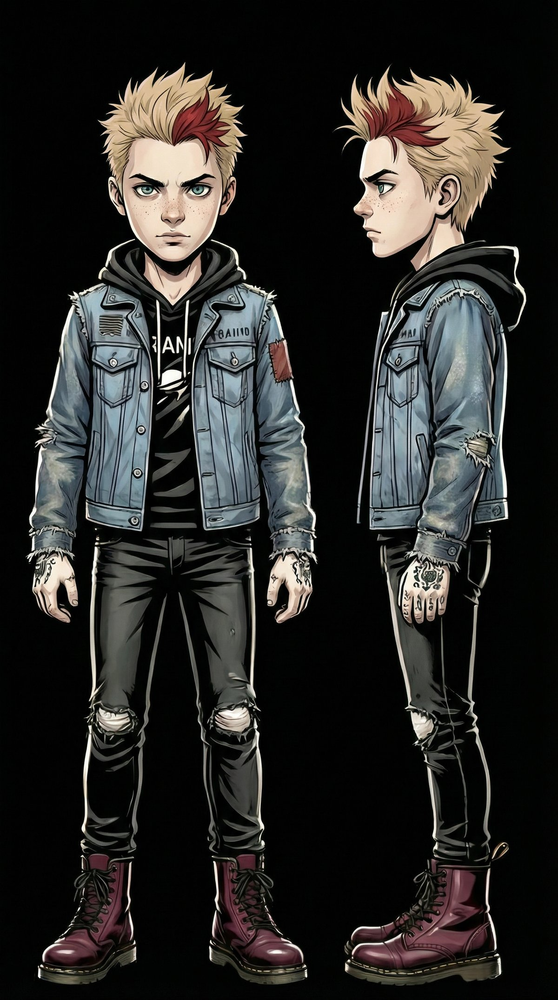
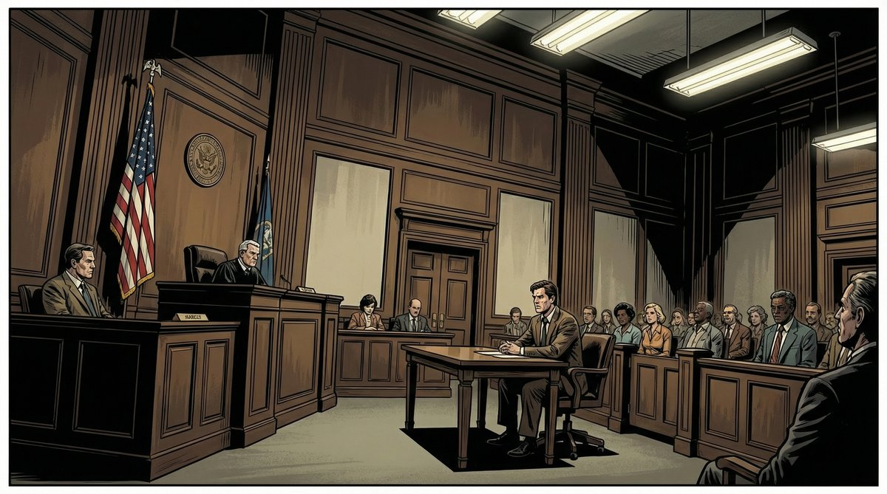

Building an AI Storyboard Pipeline with FlowBoard

Over the past two weeks, I have been building a pipeline that turns screenplay markdown into illustrated storyboards using AI image generation. The goal: create visual stories with consistent characters across dozens of shots, without losing my mind in the process.
The result? 226 generated images across 4 different stories, 34 scenes total. More importantly, a repeatable workflow that handles the hardest part of AI image generation: consistency.
The Problem with AI Image Generation
If you have used DALL-E, Midjourney, or Gemini for anything beyond single images, you have hit the wall: there is no memory. Generate a character in scene 1, and by scene 5 they have changed hair color, lost their jacket, and aged ten years. Every image is an island.
For storyboards, this is a dealbreaker. A graphic novel needs Mason to look like Mason in every panel. The courtroom needs to look like the same courtroom whether we are shooting from the judge's bench or the gallery.
The Solution: FlowBoard + Reference Images
FlowBoard is a visual node-based tool I have been developing for exactly this problem. Instead of writing prompts from scratch each time, you build reusable components—characters, settings, styles, camera setups—and wire them together into shots.
But the real breakthrough came from the portrait reference system. Before generating any story shots, I generate character portraits. These become the visual anchor for everything that follows.


Character portraits for "Damon and the Shotgun" — Mason (left) and Damon (right). These reference images get wired to every scene they appear in.
When generating a scene, the portrait goes to Gemini as a reference image alongside the prompt. The key discovery: wire the portrait to both the character node AND the output node. This ensures Gemini actually uses it rather than inventing its own interpretation.
The Workflow
Here is how a screenplay becomes a storyboard:
Screenplay (.md)
→ Master FlowBoard (.flowboard.json)
→ Scene Builder Script (Python)
→ Per-Scene FlowBoard Files
→ Wire Portraits (character refs)
→ First Pass Generation (Gemini API)
→ Contact Sheet Review
→ Shot Corrections (iterative)
→ Final ExportThe Python scripts handle the heavy lifting: parsing markdown, generating FlowBoard JSON, wiring character portraits to the right outputs, and batching API calls to Gemini.

"Damon and the Shotgun" — The inciting incident. Damon enters the Indigo Records office. The portrait reference keeps his wild-eyed appearance consistent across all 49 shots.
Cross-Story Character Development
One of the more interesting challenges: the same character appearing at different ages across different stories. Mason appears as a 7-year-old in "Red Ferrari Night," a teenager in "Accidental Frontman," and a 23-year-old professional in "Damon and the Shotgun."
Each version gets its own portrait. The teenage Mason needed different clothes (band tee, ripped jeans) while maintaining recognizable features. The portrait system handles this naturally—each story simply references its own character sheet.

Teenage Mason for "Accidental Frontman" — same character, different era, different wardrobe.
The Pros and Cons
What Works Well
- First pass is fast — 49 shots in ~35 minutes
- Character consistency — portraits solve 80% of the problem
- Iterative workflow — easy to fix individual shots
- Style coherence — noir look maintained across 200+ images
- Reusable components — same settings, props, styles across scenes
What Does Not
- Spatial reasoning — same room looks different from different angles
- Prop bleeding — dominant props (shotgun) leak into wrong scenes
- Expression calibration — "nervous" becomes "existential panic"
- Multi-character scenes — 4+ people at distance = chaos
- Corrections are expensive — some shots take 8 iterations
The Killer Technique: Cross-Scene Reference Editing
The most powerful correction technique I discovered: using an image from one scene as a reference to fix another. When shot D8-2 had the perfect prop setup (cloth under the shotgun, scattered shells), I could propagate that detail to D8-1 and D9-3 by sending D8-2 as a reference image with the fix prompt.

The "source of truth" shot — once I got this one right, I used it as a reference to fix continuity in related shots.
This is essentially teaching Gemini by example rather than description. "Make this shot look like that shot" works better than "add a cloth under the shotgun and scatter some shells around it."
What Is Next: Setting References
The next evolution of the pipeline: setting references. Just like character portraits give Gemini a visual anchor for people, pre-generated establishing shots could do the same for locations.
The idea: before running the first pass, generate 2-3 reference views of each setting from different angles. Wire those to all shots in that scene. This should solve the spatial consistency problem—the courtroom should look like the same courtroom whether we are shooting from the judge's bench or the gallery.

"Courtroom Collapse" — maintaining courtroom consistency across 48 shots is the test case for setting references.
The Bottom Line
Is this production-ready? Not quite. The correction pass still takes longer than the initial generation, and multi-character wide shots remain unreliable. But for rapid prototyping of visual stories—testing whether a scene works, exploring composition options, building pitch materials—this pipeline delivers.
226 images across 4 stories in two weeks, with consistent characters and a coherent visual style. That is not nothing.

"Accidental Frontman" — backstage after the show. Four characters, consistent outfits, correct instruments. One of the harder shots to get right.
The code is still evolving, but the core insight is simple: AI image generation needs the same discipline as any other production pipeline. Reference images, consistent naming, iterative review, documented processes. The magic is not in the AI—it is in the system you build around it.